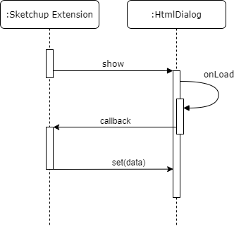

Sketchup extensions are written in Ruby, and distributed as ZIP archives or directly through the 'Extensions Warehouse'. Unfortunately, neither 'Ruby on Rails', nor 'Ruby Gems' work reliably within Sketchup - the only way to use third party libraries is by manualy including all the required source files. The following chapters will present fundamentals of the Sketchup Ruby API. For a more thourough technical analysis, please refere to the project report in the repository: IIT22: Modelling Building Envelopes Report.pdf

Extensions can access the currently open model by calling ‘Sketchup.active_model’. The ‘Model’ class has methods to access the defined materials, layers as well as the geometry.
Everything inside the Model inherits from ‘Entity’. Things that have a visual representations like faces and edges inherit from ‘DrawingElement’, that in turn inherits from ‘Entity’. The ‘entities’ method of the ‘Model’ class returns an ‘Entities’ class containing all ‘Entity’ objects in the root of the model hierarchy as seen in the above figure. ‘Entities’ is not a standard ruby collection but a Sketchup class that behaves like a collection and has methods to add new entities.
Sketchup allows the user to group primitive entities together. The contents of a group are stored in ‘ComponentDefinition’ classes. All the ComponentDefinitions of a model are accessible via the ‘DefinitionList’ class that lists all component definitions. Sketchup has two ways of grouping things together. One is with the ‘Group’ class for easier handling. The other is for cases where several instances of the same object are needed. In that case the ‘ComponentInstance’ class is used. Several ‘ComponentInstance’ objects can reference the same ‘ComponentDefinition’ whereas every ‘Group’ has its own ‘ComponentDefinition’. The ‘ComponentDefinition’ class has, like the ‘Model’ class, an ‘entities’ method that allows access to the contained entities.
Navigating the model from root to leaf is done by recursively following the references to the definition of a ‘Group’ or ‘ComponentInstance’ and then its ‘Entities’. On the other hand moving from a leaf to the root is not always possible in an unambiguous way because the ‘parent’ method returns a ‘ComponentDefinition’ and in case of a component there could be multiple ‘ComponentInstance’s it could have originated from. In such cases the model must be searched for the specific entity from the root if the parent is required.
The ‘HtmlDialog’ class allows extensions to create complicated and highly customizable windows. A 'HtmlDialog' is a chromium browser running in a separate window, with HTML, CSS and Javascript sources provided by the developer.
To create such a dialog, the extension has to create a new instance of ‘HtmlDialog’ with an options dictionary as a parameter. The options declare the size, title and other settings of the dialog. After that the HTML content of the newly created dialog can be specified by calling ‘set_file‘ or ‘set_html’. Finally, by calling ‘show’ the dialog becomes visible.
The Ruby code can call Javascript functions from the ‘HtmlDialog’ and the Javascript code can call ruby callbacks previously defined on the ‘HtmlDialog’ object.
Data to be displayed has to be transferred from the Ruby code to the ‘HtmlDialog’. However, the Ruby code cannot just call a Javascript function right after the creation of the dialog because ‘HtmlDialogs’ are created asynchronously. The HTML site has to load its content and Javascript code first. In order to transfer data, the Ruby code has to create the dialog, create a callback and then call the show method of the dialog. Now the dialog gets displayed and the Javascript code of the ‘HtmlDialog’ is executed. The Javascript components can now, after they’ve initialized themselfs, request the data by calling the predefined Ruby callback that in turn calls a Javascript function with the data as an argument. The process is visualized in the following figure.

With this technique any data, for example base 64 encoded images or json strings can be transferred to the HtmlDialog.
A huge benefit of ‘HtmlDialog’s is that both on Sketchup for Windows and Mac runs the same browser and therefore the Javascript, HTML and CSS code developed for the ‘HtmlDialog’ works on both platforms. Moreover, Javascript libraries can be used freely within 'HtmlDialogs'.

The diagram in the above figure provides an overview of the components, their most important functions and their relationships that make up the Envelop extension. Click on the diagramm itself or on the following link to view a full scale version: Architecture Overview.png. If not indicated otherwise, this diagram is to be read using UML conventions.
There are four major types of components, which are color coded in the above diagram. Red marks important centerpieces, which manage and modify key data. Violet marks dialogs, which are windows of any kind that are shown to the user. Yellow indicates custom tools that the user can use to interact with the model. Finally, utilities are colored green.
The diagram does not list any attributes, instead all listings are functions. No parentheses indicates no parameters and no type indicates no return values. The functions shown here represent only a selection of the functions of each component. This selection was made with the goal of increasing the readability and usability of the diagram.
Because the extension is written in Ruby, most of the relations are simply usings - components generally don't instantiate each other and instead just call functions. Moreover, there is only one abstract class that is inherited from.
The extension can logically be divided into six major areas of concern. These are extension initialisation, house management, plan management, materialisation, area output and modeling. Additionally, custom tools, as well as custom dialogs and utilities are important architectural features of Envelop. A much more thourough analysis of the Sketchup can be found in the report in the public repository: IIT22: Modelling Building Envelopes Report.pdf